DAVID G. SIMPSON
Personal Web Site
ITALY PHOTO ALBUM: PAGE 5
| 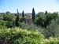 The countryside outside Florence. The streets in Florence are very narrow and surrounded by tall buildings, so it was really nice to get out into the wide-open spaces of the countryside after being in the city for a week. |
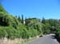 The countryside outside Florence. |
|
| 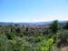 View of Florence, as seen from the surrounding hills. |
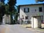 Our tour guide told us that Galileo used to live in this area. |
|
| 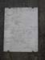 A plaque about Galileo. |
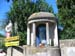 Walking along the road, we would come across a shrine from time to time. |
|
| 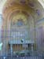 Another shrine along the road. |
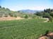 A crop (grapes, I believe) growing in the countryside. |
|
 Our tour group leaves the countryside and walks back in to the city of Florence. |
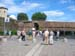 Esperanto speakers leaving the closing ceremonies at the end of the Esperanto congress. |
|
| 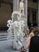 After the congress ended, I had some time to do some more sightseeing. This "statue" is actually a live person, a street performer. |
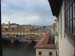 A view of the Ponte Vecchio, as seen from the Uffizi Gallery. |
|
The plane had mechanical difficulties on the way from Germany to the U.S. We had to dump fuel over the North Sea before returning to Germany. The fuel dump is shown here. |
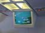 Here's the crazy path we took back to Germany, after circling over the North Sea for a while dumping our fuel. I made it back to Washington OK, though, and even got to ride first class for my trouble. |
{kind=link}
{kind=link}
{kind=link}
{kind=link}
{kind=link}
{kind=link}
{kind=link}
{kind=link}
{kind=link}
{kind=link}
{kind=link}
{kind=link}
{kind=link}
| <<< Previous | Page 5 of 5 |
|---|
Contact Information
I may be contacted at: